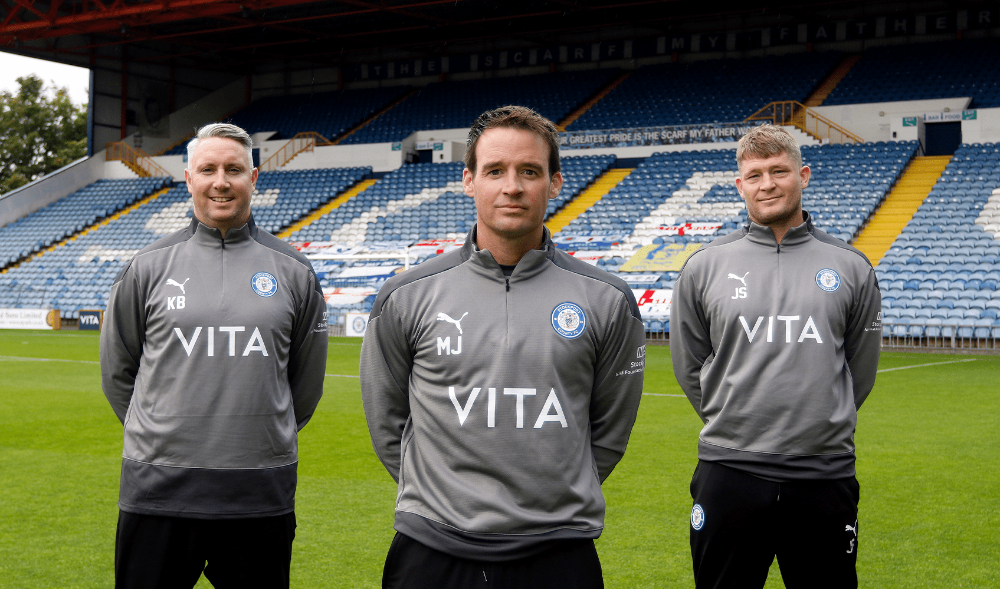
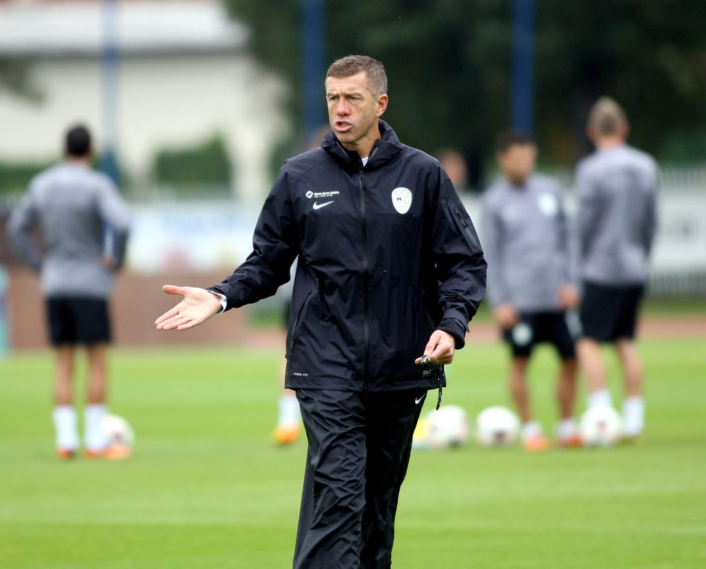
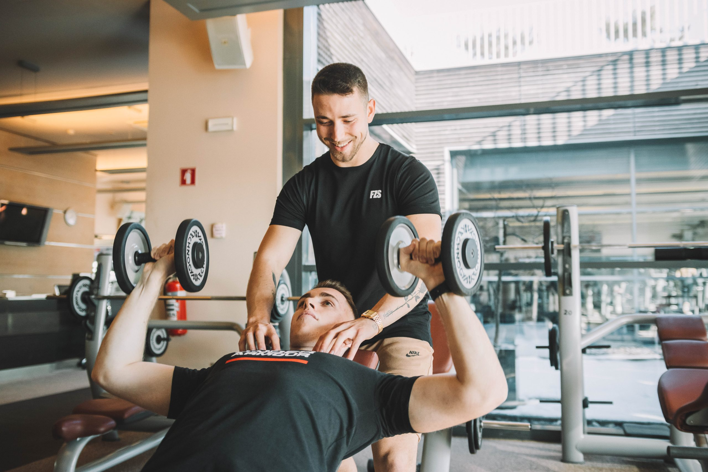
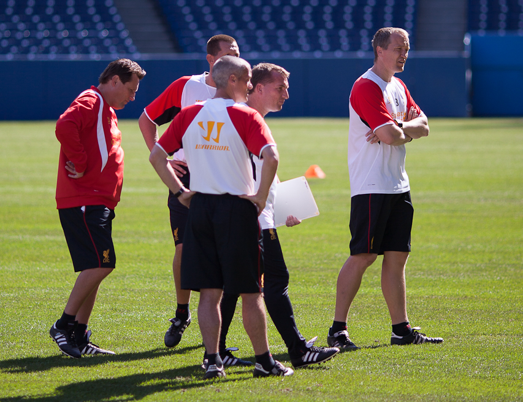

Skavti

Naša agencija se ponaša s strokovnim in strastnim skavtskim timom, na čelu s glavnim skavtom Almirom Aka Krcićem. Almir je mojster prepoznavanja talentov na Balkanu, njegova natančnost pri odkrivanju perspektivnih igralcev je brez primere. Aleksander Aco pa izstopa z odkrivanjem nogometnih biserov v Južni Ameriki, pridružil pa se mu je tudi Calvin Kleinović, ki je ključen za odkrivanje talentov v bližnjem vzhodu. Skupaj tvorijo ekipno moč, ki omogoča našim igralcem, da razvijejo svoj polni potencial in napredujejo na najvišjih ravneh nogometa.
Trenerji

Naša ekipa trenerjev vodi izkušeni Srečko Katanec, priznan po svoji svetovni reputaciji in taktični briljantnosti. Katanec je ključen za razvoj naših igralcev, saj združuje svoje bogato znanje z brezkompromisnim pristopom k igri. Poleg njega je naša ekipa trenerjev dopolnjena s strastnimi in predanimi strokovnjaki, ki skrbijo za individualni napredek vsakega igralca. Skupaj ustvarjajo okolje, kjer se igralci razvijajo tako v igralnem kot tudi osebnostnem smislu, kar jim omogoča, da dosežejo svoj najvišji potencial na igrišču.
Fitnes trenerji

Naši fitnes trenerji so predani strokovnjaki, ki skrbijo za fizično pripravljenost naših igralcev na najvišji ravni. Z natančno prilagojenimi programi vadbe in individualnim pristopom zagotavljajo, da so igralci močni, hitri in vzdržljivi. Njihov cilj je optimizirati telesno kondicijo in preprečevati poškodbe, kar je ključno za dolgoročno uspešnost igralcev na igrišču. S svojim znanjem in strastjo ustvarjajo podporo in motivacijo za vsakega posameznika, da doseže svoje najboljše rezultate. Fitnes trenerji so nepogrešljiv del naše ekipe, ki skrbi za celostno pripravljenost igralcev na vsakem koraku njihove kariere.
Ostali

Poleg naših trenerjev in skavtov, našo ekipo dopolnjujejo tudi drugi ključni zaposleni, kot so naši kuharji, ki skrbijo za prehrano igralcev z uravnoteženimi obroki, prilagojenimi njihovim potrebam. Varnostniki zagotavljajo varno okolje za treninge in tekme, skupaj s tehničnim osebjem, ki skrbi za nemoteno delovanje infrastrukture. Naši analitiki in fizioterapevti nudijo podporo z analizo podatkov in zdravstveno oskrbo, kar omogoča našim igralcem optimalne pogoje za uspeh. Vsak zaposleni prispeva k skupnemu cilju: ustvariti okolje, kjer se igralci lahko osredotočijo na svoj razvoj in doseganje vrhunskih rezultatov na igrišču.